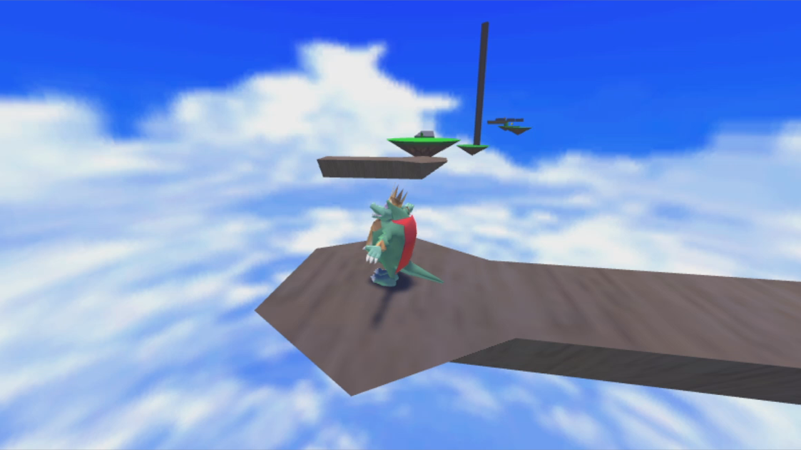
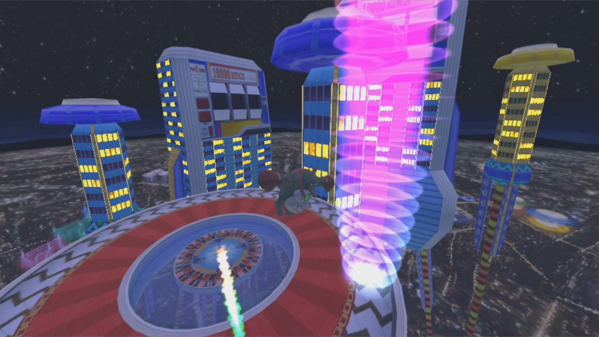

- The "King K Roller" series is a series of fan games in the 3D platforming genre
- The games were made entirely by Chris Orlassino in the Unity3D engine, with assets coming from various sources
- They are not meant to be taken too seriously, but have amassed over 100K installations and over 4.5 star ratings on both titles in the Microsoft store
- The gameplay is simple: the player is a sphere that rolls around and completes levels
- Both titles are very challenging, and the average player should expect 30 hours of gameplay

- In addition to platforming, players have to solve puzzles
- Also, players have to defeat bosses

- Please note that many assets are not owned by me, and no profit was made on these titles
- The titles are simply fan games which were meant to teach me the Unity engine without having to worry about asset creation
- If ever contacted for using protected assets, the games will be unlisted
- Click here for Xbox/Microsoft store link
- Click here for PC itch.io link